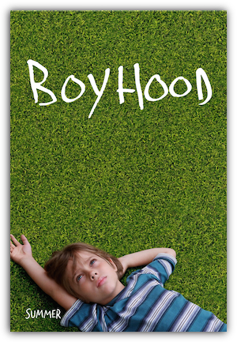

看 Boyhood 是会有疏离感的。大多数华人（包括我在内）所熟悉的美国生活都铺陈在加州或纽约式的舞台上，往往围绕着闹市、大企业和精英学校而展开。而 Boyhood 的背景则是位于德州的 suburb，几乎恰恰是其反面。辛苦的中下层中产阶级生活，十几年才换一次手的老卡车，周末父子一起看棒球，每周雷打不动去教堂礼拜的祖父把猎枪做为成年礼珍重地送给孙子。这生活并不离奇，我在书本和别的电影上早见过许多次。但理解是一回事，懂得则是另一回事。
从 6 岁到 18 岁的少年 Mason 同样陌生，那是纯然美国式的青春。我没在墙上画过喷漆涂鸦，也不曾在高中时开车出去彻夜 party 然后在后座上和女孩拥吻。被单亲妈妈带着颠沛流离，辗转于若干继父之间，在校园里向 Texas 州旗效忠，在草坪上学习棒球和射击，竞选期间作为义工去为总统候选人往居民院前的草坪上插竞选旗帜，高中时去餐馆打工给自己挣学费，都是合情合理但全然无法感同身受的事。
但即便如此，这电影还是让人打心底里觉得亲切，觉得和自己记忆深处的全部生命有某种隐秘而坚实的联系。它并不容易看进去（我很怀疑我如果不是在飞机上看的这部电影我能不能坚持过最初几十分钟），但看进去了，就会想：怎么会有这么好的一部电影，如此穿透地展示着最抽象意义上的生活的面目？
在看 Boyhood 的时候我脑海中不止一次想起 The curious case of Benjamin Button 这部电影来。它们都长，而且慢，在时间的顺流或逆流中镇定地低咏。但同 Benjamin Button 精巧但芜杂的设定相比，Boyhood 要简单纯粹得多。它甚至都没什么戏剧性，Mason 的童年虽然不是一帆风顺，但终究有惊无险地长大了。有好几次故事发展到了让人微微悬起心来的边缘——和年长的男孩一起喝酒，扔飞刀，大家出言不逊，是要打起来了么？酗酒的继父在餐桌上大发雷霆，是要家庭暴力了么？但都没有。他的生活丰富，细腻，平庸，有起伏，有褶皱，但并未脱离轨道，就像我们大多数人一样。
爸爸和妈妈也是如此。爸爸一开始看起来是个不靠谱的摇滚青年，弃家庭于不顾。但是随着时间的流逝，会看出来他身上令人惊异的好。年轻时不靠谱的痕迹到中年仍在，但只是让人觉得他在温柔敦厚之上又添了一层可爱。妈妈年轻时婚姻总是失败，但终究成功成长为独立的职业妇女，渐渐老了，命运也就不再令人焦灼。她甚至还期盼着前方能有更多东西在等着她。「我以为人生还会有更多啊！」在儿子离家去上大学时她不甘心地哭泣道。
当戏剧性都被剥离了之后，留下的就是最本质的生活了。
所有的变化都没有时间字幕，没有旁白，也没有清晰标示的间隔。我们只能看到妈妈的身材渐渐发福，年轻时紧张的神色被老去后从容的丰腴代替。爸爸从单薄的青年变成了沉稳的中年。女儿开始带牙箍，染红发，交男友。儿子身材猛地窜高，四肢都仿佛拉细的面条一样晃晃悠悠，然后又渐渐壮实起来。十二年过去了。
我们没见过这样的电影，但都见过这样的人生。
这是这部电影最神秘的地方。它触碰的是关于生活的某些极少被人讨论的特质，我们人人都知道那是什么，然而它几乎从未被宣之于口，以至于此刻当我要写下它的时候，也会苦于找不到合适的字句。一个少年，永远生活在此刻的少年，迷惑不解地凝视着自己周遭的世界，仿佛世界纷至沓来涌入自己的生活，又从指缝间逝去。人们安静地、几乎不可察觉地变老。导演变造了一个独特的时空尺度，一切都是旧的，只有叙述的视角是新的。
这里没什么人生教训和心灵鸡汤，就只是我们所已知的一切而已。而温情的美就这样不可遏止地涌现了出来。
“You know how everyone’s always saying seize the moment?” she asks. “I don’t know, I’m kind of thinking it’s the other way around, you know, like the moment seizes us.”
“Yeah,” he replies. “Yeah, I know, it’s constant, the moments, it’s just — it’s like it’s always right now, you know?”
“Yeah,” she says.

February 28th, 2015 17:35
一直follow您的博客好几年了，每篇读来都莫名地舒服，弄成集子出版吧。
March 1st, 2015 18:13
Yaner说了我说的。
March 9th, 2015 01:16
Phrases of service – Content material elimination – Add Porn Videos – Instrument to download flash videos – Advertising We would like to ask you to return again every week for updated Milf content which will include model new pictures and video galleries on your viewing pleasure.
Remember to bookmark us, and keep in mind to spread the word that
Milfs Record is arms down the most popular porn site on the
net. Happy browsing! Sexy MILF lets him fuck her tits and pussy together with his
cock POV of a huge cock pussy nailing & tit fucking a nasty MILF Nasty Mom Moms Pussy Fuck that slutty wife in her asshole In Moms Pussy
Mom Fuck Boys Mom Tube report Blowjob & Cum
Tube report Cam to Cam BBW Mature Russian Large
Boobs Dildoing Novice MILF Tube report All Hot Mothers Older Girl Video Mother & Boy Clips Creamed Pussy Spouse pussy
March 19th, 2015 00:16
I just thought about evrything I just thought and showed them out.
Awesome, great!